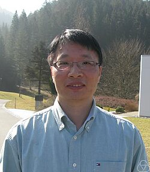

Tianwen Tony Cai (蔡天文) | |
|---|---|
 | |
| Born | Tianwen Cai 1967 (age 58–59) |
| Education | Zhejiang University Shanghai Jiao Tong University Cornell University |
| Relatives | Tianxi Cai (sister) |
| Awards | COPSS Presidents' Award (2008) |
| Scientific career | |
| Fields | Statistics |
| Institutions | Purdue University University of Pennsylvania |
| Thesis | Nonparametric Function Estimation via Wavelets (1996) |
| Lawrence D. Brown | |
| Website | http://www-stat.wharton.upenn.edu/~tcai/ |
Tianwen Tony Cai (Chinese: 蔡天文; pinyin: Cài Tiānwén; born March, 1967) is a Chinese statistician. He is the Daniel H. Silberberg Professor of Statistics and Vice Dean at the Wharton School of the University of Pennsylvania. He is also professor of Applied Math & Computational Science Graduate Group, and associate scholar at the Department of Biostatistics, Epidemiology & Informatics, Perelman School of Medicine, University of Pennsylvania. In 2008 Cai received the COPSS Presidents' Award.
Cai was born in Rui'an, Wenzhou, Zhejiang, China. In 1986, he graduated from the Department of Mathematics, Hangzhou University (previous and current Department of Mathematics, Zhejiang University), at 18 years old.[1] In 1989, he received an M.Sc. from Shanghai Jiao Tong University and in 1996, earned a PhD from Cornell University.[2]
Cai was appointed the Dorothy Silberberg Professor at the Wharton School of the University of Pennsylvania from July 1, 2007 [3] to July 31, 2018 and has been the Daniel H. Silberberg Professor at Wharton since August 1, 2018. Cai has been the Vice Dean of the Wharton School since August 1, 2017.
Cai's research focuses on high-dimensional statistics, statistical machine learning, large-scale inference, nonparametric function estimation, functional data analysis, and statistical decision theory, and applications to genomics, compressed sensing, chemical identification, medical imaging, and financial engineering.[4]
In 2017, Cai was elected to the presidency of International Chinese Statistical Association (ICSA).
Cai was a co-editor of the Annals of Statistics from 2010 to 2012. He has also served on editorial boards of several other journals, including Journal of the American Statistical Association (JASA), Journal of the Royal Statistical Society Series B (JRSSB), Statistics Surveys, and Statistica Sinica.[5]
Cai has four brothers and one sister. His sister Tianxi Cai is the John Rock Professor of Population and Translational Data Sciences in the Department of Biostatistics at the Harvard T.H. Chan School of Public Health. She is also a professor at Harvard Medical School. His brother Tianwu Michael Cai, majored in physics (PhD, Rochester) is a vice-president of Goldman Sachs. Tony Cai has two children, a son and daughter.
{kind=link}